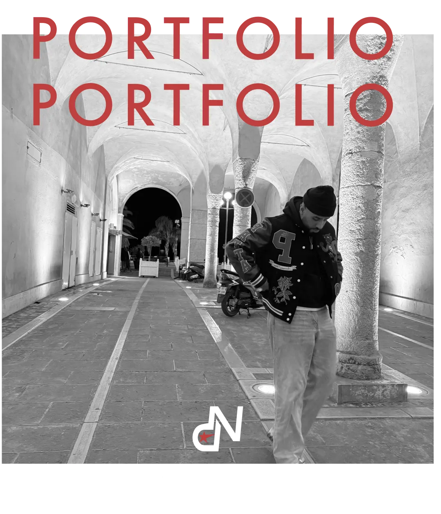
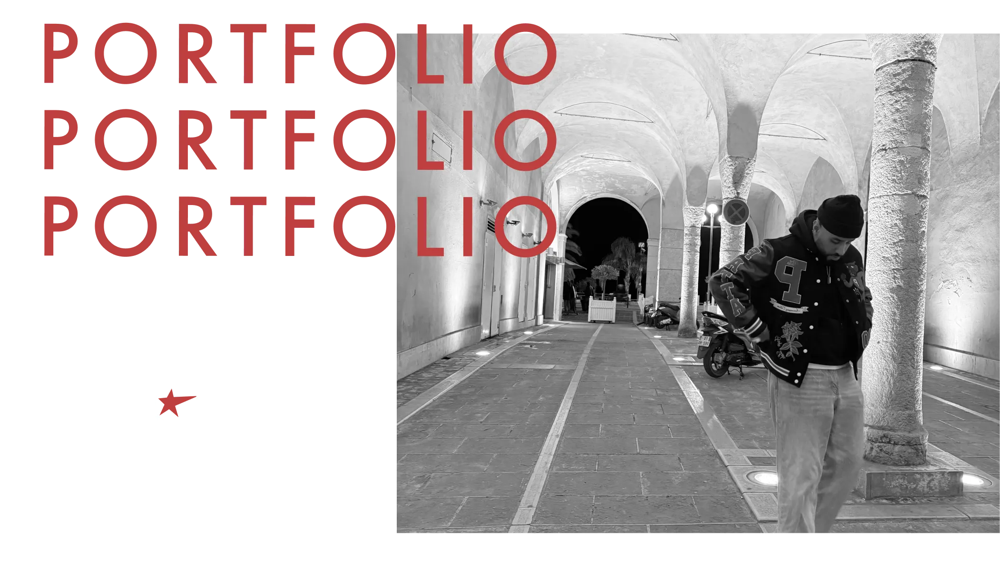
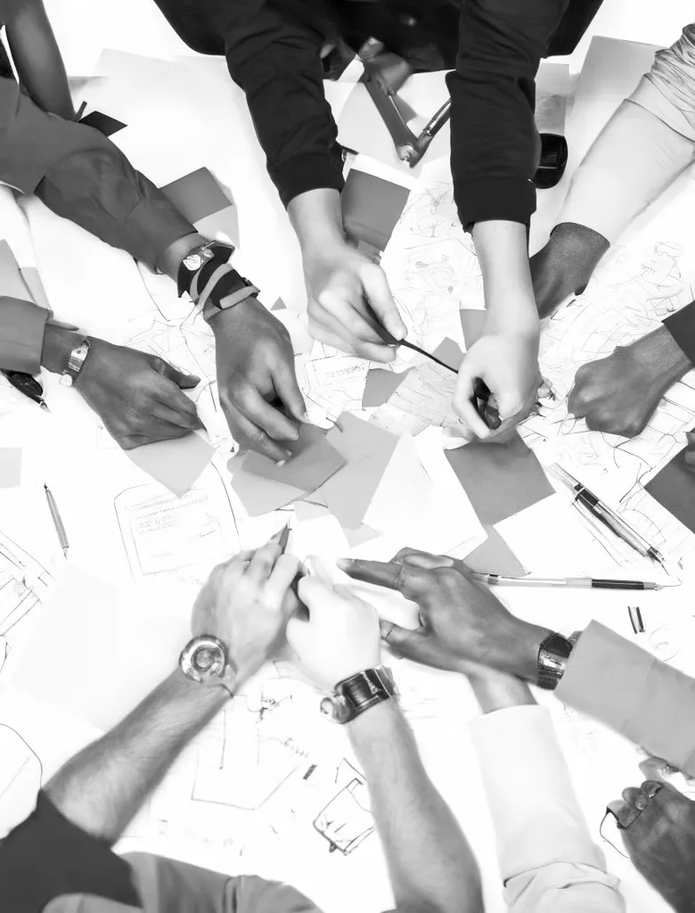
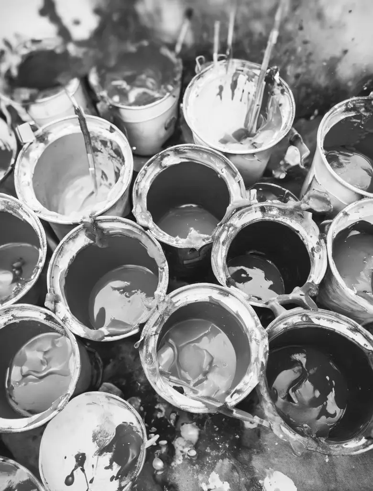

01. Research
02. Idegenerering & Prototype

03. Code & Finpuds
DYK NED I MIT PORTFOLIO
Velkommen til mit portfolio! Her kan du udforske de projekter, jeg har skabt på Multimediedesign første semester. Jeg har på semesteret skabt i alt seks websites, som jeg præsenterer her. Du vil også finde temabeskrivelser og få indsigt i min proces, løsninger og resultater.
Jeg er Daniyal Nusrat, en passioneret multimediedesigner med fokus på moderne og drømmende design. Gennem mine projekter stræber jeg efter at skabe visuelle løsninger, der både er funktionelle og æstetisk tiltalende. Tag et kig rundt, og bliv inspireret!